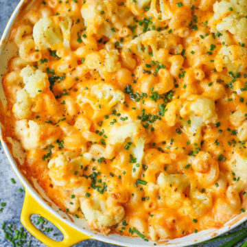

Cauliflower Mac N Cheese

Facts
- Cook Time: 20 minutes
- Prep Time: 10 minutes
- Total Time: 30 minutes
- Servings: 4
- Yield: 1 9x13 inch pan
Ingredients
- 1 1/2 cups elbox macaroni
- 1/2 cup cauliflower florets
- cooking spray
- 1 tablespoon olive oil
- 1/2 cup milk
- 1 1/2 cups shredded cheddar cheese
- 1/2 (8 oz) package cream cheese
- 1/2 teaspoons salt
- 1/8 teaspoon ground black pepper
Directions
- Bring a large pot of lightly salted water to a boil. Cook elbow macaroni in the boiling water, stirring occasionally until tender yet firm to the bite, 8 minutes. Drain.
- Place a steamer insert into a saucepan and fill with water to just below the bottom of the steamer. Bring water to a boil. Add cauliflower, cover, and steam until tender; 5 to 6 minutes. Place cauliflower in a blender or food processor; blend until smooth.
- Coat a large saucepan with non-stick cooking spray. PLace over medium heat. Add oil and flour; cook, stirring constantly, until a thick paste forms; 1 to 2 minutes. Add milk; cook and sitr until mixture thickens; 3 to 4 minutes.
- Mix cauliflower, cheddar cheese, cream cheese, salt and pepper into milk mixture; stir until sauce is smooth. Fold macaroni into sauce.
Nutrition Facts | Per Serving
- 471 Calories
- 19.3 g Protein
- 34.3 g Carbohydrates
- 28.5 g Fat
- 77.7 mg Cholesterol
- 655.5 mg Sodium